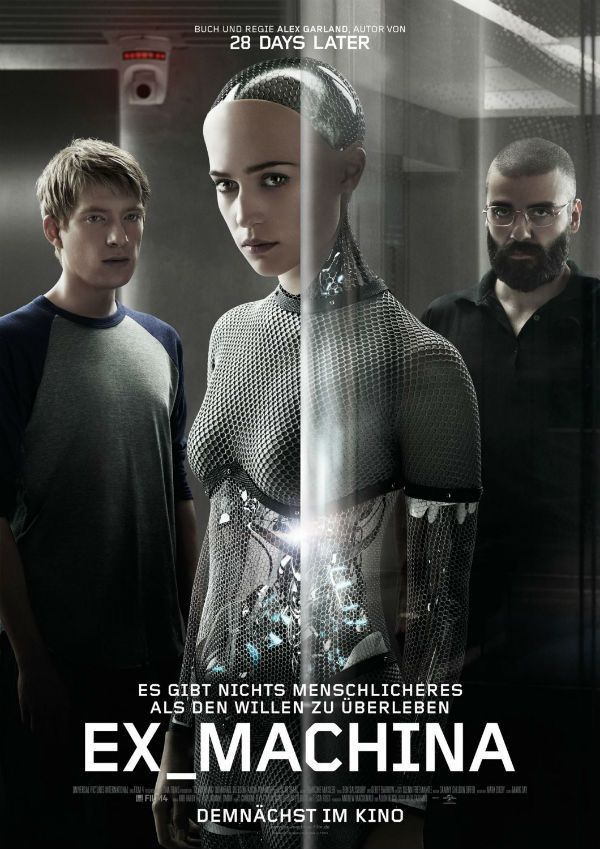
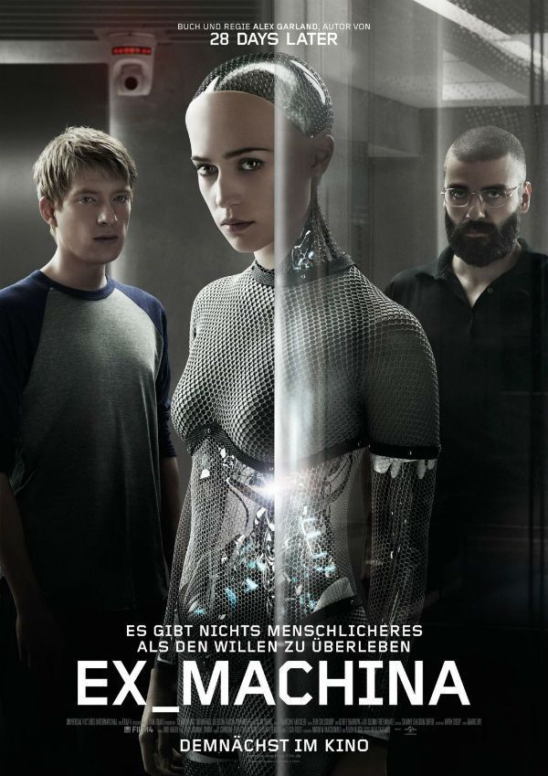

This is my favourite anime. I love Spirited Away because it’s a magical journey that blends stunning animation with profound storytelling. The film’s whimsical world and unforgettable characters resonate deeply with me, evoking a sense of wonder and nostalgia. The themes of courage, self-discovery, and the beauty of the unknown make it a timeless masterpiece that always touches my heart.
I’m fascinated by ‘Ex Machina’ because it delves into thought-provoking questions about artificial intelligence and human nature. The film’s sleek, minimalist aesthetic and its intense, suspenseful atmosphere draw me in completely. It’s a gripping exploration of consciousness and morality, and I love how it keeps me questioning the boundaries between human and machine.
I love ‘Black Panther: Wakanda Forever’ because it not only honors the legacy of Chadwick Boseman but also deeply resonates with me on an emotional level. The film beautifully weaves together themes of heritage, resilience, and community, and I found myself deeply moved by the heartfelt tributes and the strong portrayal of characters. The stunning visuals and the rich cultural elements truly captivated me, making it not just a movie, but a powerful and emotional journey.
 
